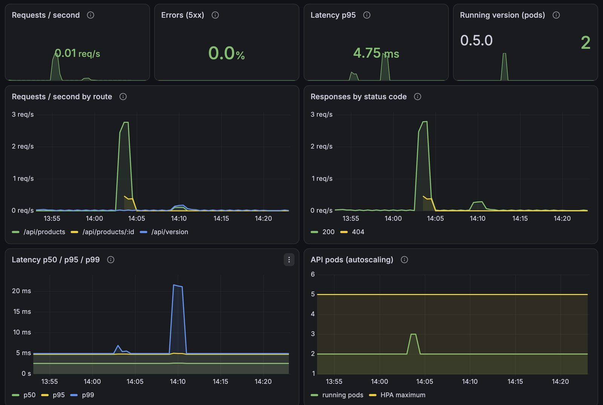
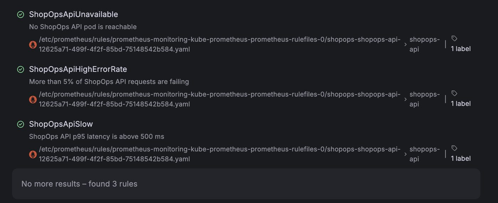

ShopOps Platform
From laptop to production, the DevOps way
A small inventory service taken through the whole path a real team uses to ship software: containers, a CI pipeline with security scanning, infrastructure as code, Kubernetes, GitOps and monitoring. Planned as company ticket PLAT-101 and built phase by phase on a zero-cost budget. Six of the eight phases are done.
01 / the briefThe brief
I wrote the project the way a platform team receives work: a ticket with a goal, constraints and a definition of done.
Take the shop inventory service from "runs on my laptop" to a reproducible, tested, scanned and observable deployment. Every change goes through a pull request and a pipeline. Secrets never enter Git. Total cost: zero — local clusters and free tiers only, with a short, budget-capped cloud deploy at the end that is torn down with terraform destroy.
The application is deliberately small — a REST API for products with a web front end — so the attention goes to how it is built, shipped and run.
02 / architectureArchitecture
The stack runs on a local Kubernetes cluster: k3d, with one server and one agent node inside Docker. Only the ingress is reachable from outside; the API and the database are internal services that find each other by name. Prometheus collects the API's metrics every 30 seconds and Grafana turns them into the dashboard shown in Phase 6.
How a change reaches the cluster
Nobody runs kubectl apply or helm upgrade by hand. In this local setup the images are built on my machine and loaded into the cluster; the production values point at the images the pipeline publishes to GHCR.
03 / roadmapRoadmap
| Phase | What it delivers | Status |
|---|---|---|
| 0 · Application | Node.js API with 12-factor config, liveness and readiness endpoints, graceful SIGTERM shutdown, JSON logs, automated tests | ✅ Done |
| 1 · Containers | Multi-stage Dockerfiles, non-root users, read-only filesystem, Compose stack with healthchecks and an isolated database | ✅ Done |
| 2 · CI pipeline | GitHub Actions: test → build → Trivy scan → push to GHCR, least-privilege permissions | ✅ Done |
| 3 · Infrastructure as code | Terraform on AWS: budget alerts, a two-zone VPC, tiered security groups, remote state with locking, GitHub OIDC with no stored keys | ✅ Done |
| 4 · Kubernetes | k3d cluster, Helm chart with dev and prod values, probes, resource limits, autoscaling, disruption budgets | ✅ Done |
| 5 · GitOps | Argo CD deploys the chart from Git with automatic sync, pruning and self-healing | ✅ Done |
| 6 · Observability | Prometheus metrics from the API, a Grafana dashboard and three alert rules | ✅ Done |
| 7 · Hardening | TLS, secret management, database backups, k6 load tests | Next |
| 8 · Operations | Runbook, game day, postmortem and final documentation | Planned |
04 / phase 1 — containersPhase 1 — Containers
npm ci only re-runs when dependencies change.node user and the web server as an unprivileged Nginx user — checked with whoami.no-new-privileges, a tmpfs for /tmp and an init process for clean signal handling..env; Compose refuses to start without it.05 / phase 2 — ci pipelinePhase 2 — CI pipeline
- Least privilege: the workflow can only read the repository; the build job alone gets permission to write packages.
- No pushes from pull requests: images are published only from
main, so untrusted code can never reach the registry. - Pinned scanner: Trivy is pinned to versions known to be safe after the March 2026 supply-chain attack on its GitHub Action, when release tags were overwritten with credential-stealing code.
06 / phase 3 — infrastructure as codePhase 3 — Infrastructure as code
The AWS side is written in Terraform and reviewed as a plan before anything is applied. This phase builds only what costs nothing to keep: no servers, no NAT gateway, no load balancer, no managed Kubernetes. Those wait for one short, budget-capped week at the end.
prevent_destroy. S3's native lock file stops two runs from changing it at once.main branch and its pull requests, can read the account, and can write only the state bucket.terraform fmt, validate and plan, so an infrastructure change is reviewed like code. Locally I only apply saved plans.07 / phase 4 — kubernetesPhase 4 — Kubernetes
The three services moved from Compose to a local Kubernetes cluster: first as plain manifests with Kustomize, then as a Helm chart. I tested the basics by hand: deleted pods and watched Kubernetes replace them, and ran a load test to watch the autoscaler react.
k3d image import, so no registry is needed.pg_dump.08 / phase 5 — gitopsPhase 5 — GitOps
Argo CD runs inside the cluster and watches the Helm chart on the main branch. From this phase on, Git is the single source of truth: the cluster changes only when a pull request is merged.
- Automatic sync: a merged change reaches the cluster within about three minutes, the interval at which Argo CD checks Git.
- Prune: a resource deleted from Git is deleted from the cluster too, so nothing is left running by accident.
- Self-heal: a change made directly with
kubectlis reverted to what Git says. - First change through GitOps: scaling the web tier to three pods was a one-line pull request; after the merge Argo CD rolled it out without a single manual command.
- Rollback: reverting the commit is the rollback, through the same reviewed path as any other change.
09 / phase 6 — monitoringPhase 6 — Monitoring
The API now reports its own health in numbers. I wrote the /metrics endpoint by hand in the Prometheus text format, in under a hundred lines and with no new dependency. The monitoring stack (Prometheus and Grafana, from the kube-prometheus-stack chart) collects it every 30 seconds.
/api/products/:id and health checks are not counted, so the number of time series stays the same however many products exist.

What the dashboard taught me
During that burst the requests graph peaked below 3 per second, yet the autoscaler still added a pod. A two-minute rate() spreads a short burst across the whole window, while the autoscaler checks CPU every 15 seconds. Latency told the same story: at 14:10 the median stayed near 2.5 ms while p99 jumped to 21 ms. Averages hide exactly the moments you need to see.
10 / what went wrong, and how i fixed itWhat went wrong, and how I fixed it
The scanner blocked my first pull request
Both image builds failed on the first pipeline run: Trivy found high-severity vulnerabilities in zlib inside the base images, with fixed versions already available. I upgraded OS packages during the build, moved Nginx to the maintained stable image and removed npm and corepack from the API runtime image, which the running app never uses. The next run passed. The problem was caught before merge, not in production.
The pipeline was locked out of AWS
Once the OIDC role existed, the Terraform job failed with AccessDenied. The trust policy looked right, so instead of guessing I opened CloudTrail and read what AWS had actually received. GitHub identified the repository by its immutable owner and repository IDs (repo:owner@id/name@id), not the plain name my policy expected. After I matched that format the job passed. A bonus: a deleted and recreated repository with the same name cannot use the role.
Tests that never ran
Since Phase 1 the Dockerfile had a test stage, and I believed a failing test would stop the image build. In Phase 6 I found it never ran: BuildKit only builds the stages the final image depends on, and nothing depended on the test stage, so it was silently skipped. Now the runtime stage copies one file from the test stage, which forces the tests to run. The first real run failed straight away on a test that needs the web folder, which is not part of the API image; that test is skipped inside the build and still runs in CI.
A database restart hidden in the chart
While bumping the chart version I noticed that every pod template carried the chart's version labels. A new label means a new pod template, and a new template means new pods, so every release would have restarted PostgreSQL for no reason. The database and web pods now carry only stable labels.
My load generator ran out of ports
To test the autoscaler I fired requests in a tight loop from a busybox pod. After a while every request failed with Cannot assign requested address: a closed connection keeps its local port reserved for a while, and the loop used them up faster than they came back. A short pause between requests fixed it; a proper load-testing tool, k6, is part of Phase 7.
11 / key decisionsKey decisions
| Decision | Why |
|---|---|
Plain node:http, one dependency (pg) | A small dependency tree is less to patch and less for a scanner to flag. |
| Metrics written by hand, not with a client library | The Prometheus text format is simple. Writing it kept the dependency count at one and taught me what each number means. |
| Readiness separate from liveness | "The process is up" and "it can serve traffic" are different questions, and Kubernetes acts on each one differently. |
| Only the ingress is exposed | The API and the database are internal services; the database is never reachable from outside. |
| Fail the pipeline only on fixable vulnerabilities | Blocks real, actionable risk without failing on issues nobody can fix yet. |
| GitHub OIDC instead of stored AWS keys | Short-lived credentials; nothing long-lived to leak from the repository. |
| No NAT gateway | The private subnets don't need the internet yet, and a NAT gateway is billed for every hour it exists. |
| Local Kubernetes (k3d) instead of EKS | Same skills, zero cost; the cloud is used briefly at the end, behind budget alerts. |
| The cluster changes only through Git (Argo CD) | Every change is reviewed, recorded in history and reversible with a revert. |
| Dashboards and alerts inside the Helm chart | They are versioned and reviewed like code, and deployed together with the app they watch. |
12 / what i have learned so farWhat I have learned so far
- "Started" is not "ready" — healthchecks and readiness are what make a system start reliably.
- A container image is only as secure as its base layers; scanning has to run on every change.
- Check that the safety net works: a test stage that silently never runs is worse than none.
- When access is denied, read the audit log before changing policies. CloudTrail showed exactly what AWS received.
- Averages hide the moments that matter; look at short windows and at p95 and p99, not only the median.
- In Kubernetes, labels on a pod template are part of the release: change them and the pods restart.
- "Free" is a design constraint, not an excuse. It shaped the network, the cluster and the order of the work.
13 / documentationDocumentation
Run it with Docker Compose
- Clone
github.com/zaidmuzaffar/shopops-platformand install Docker. - Create the secret file:
echo "POSTGRES_PASSWORD=yourpassword" > .env(letters and numbers only). - Start the stack:
docker compose up -d --build, thendocker compose psuntil all three services are healthy. - Open
http://localhost:8080.
Run it on Kubernetes
- Create a local cluster:
k3d cluster create shopops --agents 1 -p "8081:80@loadbalancer". - Build the images and load them into the cluster:
docker build -t shopops-api:0.5.0 app/api,docker build -t shopops-web:local app/web, thenk3d image import shopops-api:0.5.0 shopops-web:local -c shopops. - Create the namespace and the database secret:
kubectl create namespace shopops, thenkubectl -n shopops create secret generic shopops-db --from-literal=POSTGRES_PASSWORD=yourpassword. - Install kube-prometheus-stack as Helm release
monitoringin themonitoringnamespace; the chart's alert rules and dashboard need it. To skip monitoring, setmonitoring.enabled=false. - Install Argo CD and apply
argocd/shopops-app.yaml; Argo CD then deploys the chart frommain. Without Argo CD:helm install shopops k8s/helm/shopops -n shopops. - Open
http://localhost:8081.
Repository layout
app/api — Node.js service, tests and Dockerfile. app/web — UI, Nginx config and Dockerfile. compose.yaml — the local stack. .github/workflows — the CI pipeline. infra/ — Terraform for AWS. k8s/base — plain Kubernetes manifests (Kustomize). k8s/helm/shopops — the Helm chart, with the alert rules and the Grafana dashboard. argocd/ — the Argo CD application. docs/ — phase notes; the runbook and postmortem arrive in Phase 8.